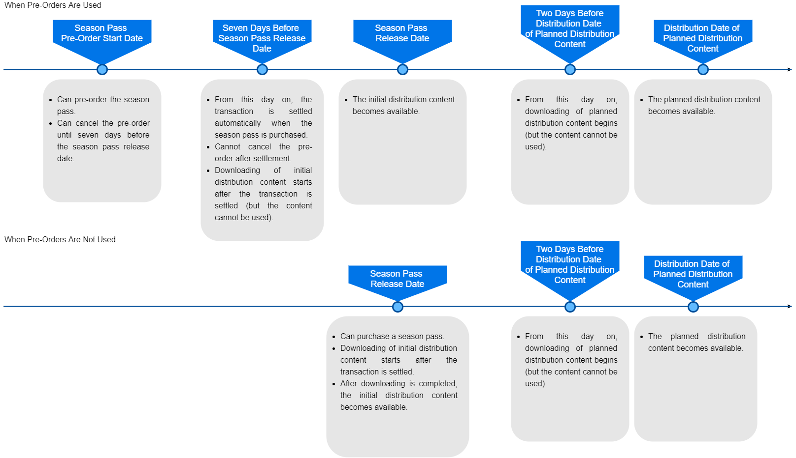

Season Pass
A season pass is a collection of multiple pieces of downloadable content, including content that will be distributed in the future, sold together as a bundle. For more information about bundles, see 3.3 Selling Bundles and Sets.
Season passes contain the following kinds of downloadable content.
- Downloadable content that is available on the day the season pass is released (referred to as the initial distribution content).
- Downloadable content that will be distributed at a future time (referred to as the planned distribution content).
- Planned distribution content becomes usable on its specified release date.
For example, The Legend of Zelda: Breath of the Wild Expansion Pass, which is the season pass for The Legend of Zelda: Breath of the Wild, contains the following downloadable content.
- A purchase bonus that can be used in-game immediately (the initial distribution content).
- The Master Trials and The Champions' Ballad (The planned distribution content. Not distributed when The Legend of Zelda: Breath of the Wild Expansion Pass was first released.)
Distribution of Downloadable Content Using a Season Pass
Season passes support pre-orders. For more information about pre-orders, see 3.4 Sales Options (Discounts, Buyer Benefits, Download Codes, Pre-Orders, Season Passes).
The following figure compares the process of distribution when pre-orders are used and when they are not used.

Preparing ROMs for the Downloadable Content to Distribute
You can sell a season pass even if you have not yet prepared ROMs for all the downloadable content included in the season pass. You simply must prepare each ROM before download begins for that piece of downloadable content.
Distribution Settings for Season Passes
The settings for distributing a season pass are configured on NCMS. For more information about using NCMS, see the NCMS manual.
Information about the sale of the season pass must be registered as a bundle on NCMS.
Supplementary Description
This section presents a supplementary description of the settings configured on NCMS and important considerations.
- Registering the Downloadable Content Included in the Season Pass
- Publicize information about all of the pieces of downloadable content when you publicize the season pass, even if you will not sell the downloadable content separately.
- For the release date, set the distribution date (the planned distribution date) that will be shown to users on Nintendo eShop.
- This information will also be included in the receipt email that is sent when a user purchases the season pass.
- This setting must be configured even if you do not plan to sell the downloadable content separately.
- In Release Date > Date Display Format, select either Year, Month, Day or Year, Month.
- If you select Year, Month, the release date will be displayed as the last day of that month on Nintendo eShop.
- You can register the downloadable content even if the ROM has not yet been prepared.
- However, you must configure the ROM distribution settings for that downloadable content before starting downloads of the ROM.
- Registering Bundles
- In Basic Information > Season Pass, select Supported (ROM Not Required on Sales).
- If you instead select Supported (ROM Not Required on Sales), you must configure the ROM distribution settings for all downloadable content, including planned distribution content, before the date when transactions start being settled for purchased season passes.
- For the bundle, include not only the initial distribution content, but also all planned distribution content.
- You can add planned distribution content to the bundle after the release of the season pass. For more information, see Clearly Indicating the Contents of a Season Pass later on this page.
- In Basic Information > Season Pass, select Supported (ROM Not Required on Sales).
Important Information
Purchase Restrictions
You can sell a season pass and also separately sell downloadable content contained in that season pass. However, when you do this, the following restrictions apply to the purchase of the season pass to prevent the duplicate purchase of downloadable content.
- If a user owns all of the distributed downloadable content that is included in the season pass, the user cannot purchase the season pass.
- If a user owns some of the distributed downloadable content that is included in the season pass, the user can purchase the season pass, but a notice is displayed at the time of the purchase.
Automatic Cancellation of Pre-Orders
If there is no new downloadable content for users to get when transactions for purchased season passes start being settled, for example because the initial distribution content is not yet ready, the pre-orders will be canceled automatically.
Using Pre-Orders for Downloadable Content Together With Season Passes
You can use pre-orders for downloadable content together with season passes. For example, you can use pre-orders to sell just the downloadable content that is included in a season pass, timed to the distribution date for the downloadable content included in that season pass. If you use them together in this way, you must set a distribution date for the downloadable content included in the season pass, and separately set a distribution date for the downloadable content that has been configured for pre-order purchase.
If you set an earlier distribution date for the downloadable content in the season pass than the downloadable content sold separately as a pre-order, users who purchased the season pass can get the content earlier than users who pre-ordered just the downloadable content.
Clearly Indicating the Contents of a Season Pass
When a user purchases a season pass, the downloadable content included in that season pass and the distribution dates for that content must be clearly indicated. Configure the settings on NSMS so this information is displayed in the details page for the season pass on Nintendo eShop, and provide the downloadable content as stated.
After the season pass is released, you can include downloadable content that was not previously planned for distribution. However, do not add downloadable content that is sold separately to a season pass after the fact.
When Selling Season Passes in Europe
If selling a Season Pass in Europe, make sure that the content available on the Season Pass launch date is available for download at the time of settlement. Even if the content is not usable at settlement, downloading it at that point is mandatory.
If you want, you can include data for content in the application or a patch, and make that data available to the downloadable content you distribute at the time of settlement.
CONFIDENTIAL